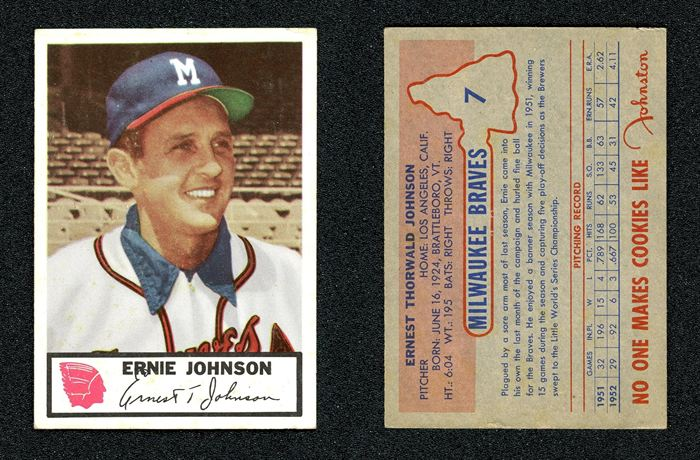
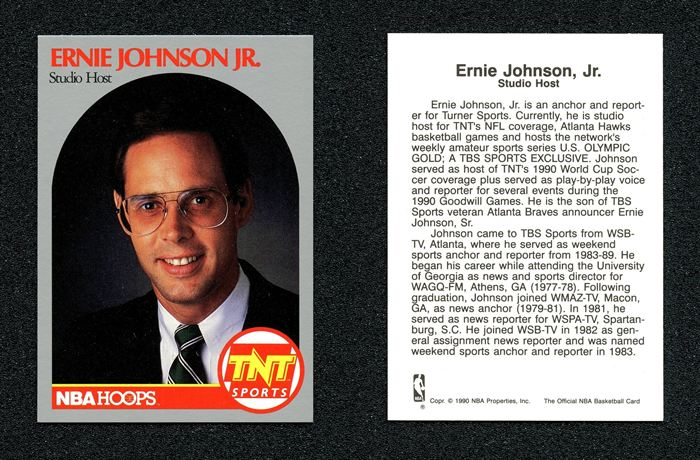
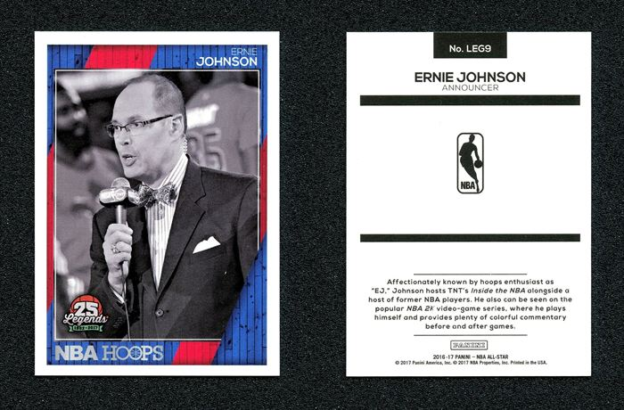

Ernie Johnson Sr. pitched for the Milwaukee Braves in the '50s, then spent decades as the voice of Braves baseball. Ernie Johnson Jr. grew up around that booth and took the family trade to basketball, becoming the heart of Inside the NBA. One name, two games — seventy years of cardboard between them.


